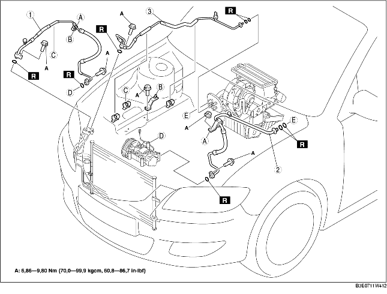

1. Neem de minkabel van de accu los.
2. Tap het koudemiddel af. (Zie HERGEBRUIK KOUDEMIDDEL.) (Zie BIJVULLEN KOUDEMIDDEL.)
3. Verwijder het reservoir van de stuurbekrachtigingsvloeistof.
4. Verwijder het koelvloeistofreservoir. (Zie VERWIJDEREN/PLAATSEN EXPANSIEVAT.)
5. Verwijder de gaskabel.
6. Verwijder de steun van de slang van de stuurbekrachtigingsvloeistof.
7. Verwijder het onderpaneel.
8. Verwijder de onderdelen in de aangegeven volgorde, zie de tabel. Mors geen compressorolie.
9. Plaats de onderdelen in omgekeerde volgorde.
10. Controleer de werking van het koelcircuit. (Zie CONTROLE WERKING.)

.